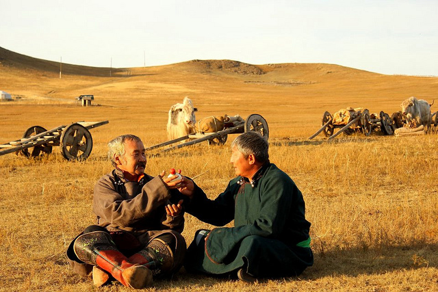
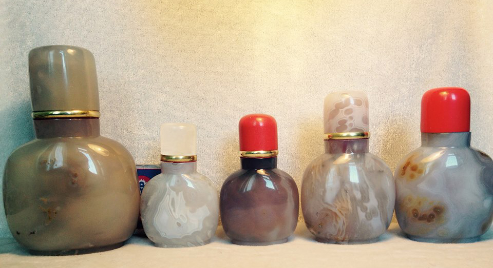
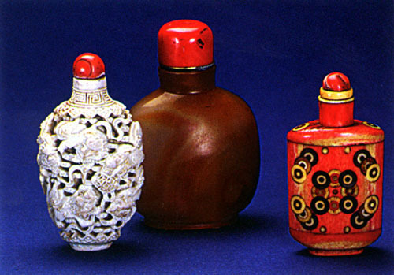

Arts and Crafts
Mongol Ger (Yurt)
The Mongolian Ger is ideally suited to the country's extremes of climate and the people's nomadic way of life. It is a multipurpose dwelling that can be easily collapsed, transported to another place and put up again fully preserving its original shape. Being constantly on the move with herds of animals or being on military campaigns compelled Mongols to build gers on carts. Old books contain pictures of such gers, temporary abodes in which families of three or four could spend the night or find shelter. After some time the use of carts stopped because they were clumsy and the gers could not be hauled over long distances as there was the danger of getting stuck in the mud somewhere or tipping over.
The ger has two key components — the wooden framework and the felt cover. The wooden parts are the walls, the long poles, the round smoke escape and its supports. One wall consists of 10-15 wooden poles, each about 1.5m high, bound together in a way making it possible to fold it for transportation and then unfold like an accordion. The unfolded walls are connected to form a circle. The long poles are fastened to the upper part of the walls, with the other end passed through the round support at the top of the ger, the only window and smoke escape in the ger. Two posts prop up the round support. All this forms the wooden framework of the ger, which resembles an open umbrella. Two layers of felt are then laid on the roof and on the walls and tied down with hair rope. The top of the ger has a felt flap that can be drawn over the roof when the weather is bad.
Inside the ger, felt is laid either on a wooden floor or straight on the ground. The door of the ger always faces south towards the sun. The number of walls and poles determines the size of the ger. Most herders' gers have five walls, which make a living area of 16-18 sq. m. Larger gers can have up to 12 walls.
In the centre of the ger is the hearth, which has a special meaning for the Mongols. Apart from its utilitarian purpose, the hearth symbolizes ties with ancestors. There are several customs associated with hearth. Desecration of the hearth is a sin and an insult to the master of the house. The hearth is mounted on three stones, which symbolize the host, the hostess and the daughter-in-law. The hearth is the centre of the ger and divides the ger space into three conventional areas — the male and female quarters and the khoimor.
The male quarters are on the western side. Here the host keeps the saddle, the horse bridle and the koumiss bag. The female quarters are on the eastern side where she keeps the kitchenware and appliances.
Accordingly, a man entering the ger goes straight to the western part and a woman to the eastern part. It is believed that the male quarters are under the protection of heaven and the sun patronizes the female quarters. The most honoured place is the khoimor by the northern wall, opposite the door. Here, they keep objects dear to the master of the house, his weapons, his Morin Huur (musical instrument) and the host's horse bridle. Pieces of furniture, usually two wooden chests, painted bright orange, are also placed in the khoimor. Framed photographs of the host's family and friends are put on the chests for everyone to see. If the host has some governmental award, he is sure to hang it in the khoimor.
When guests visit, the hosts usually sit on the eastern side of the khoimor and the guests on the western side. The hostess' place is by the hearth and the children are supposed to sit near her but closer to the door.
The bed of the host and hostess is in the female quarters; those for guests are on the opposite side. The children are put to sleep at their parents' feet.
There are many philosophical ideas on the ger, its parts and functions. The smoke escape is the only opening through which light penetrates the ger. An old legend has it that it was through such a hole that a fair-haired man got into the ger of Alangua, the Mongols' ancestral mother, and begot three sons. In olden days people could tell the time by the sun's rays falling on the cross-pieces of the smoke escape and on the poles. The Mongols divided the day into twelve hours and each hour into twelve minutes, which they called by the names of the lunar calendar animals.
A hair rope, chagtaga, is fastened to the smoke escape from which a weight stabilising the ger is suspended during strong winds. In new gers, they fasten a khadag to it, a piece of blue silk in which a handful of grain is wrapped. The symbolism of this ritual can be summed up like this — "May happiness multiply in this new ger like grains of corn and may life be pure and beautiful here."
The ger supports ensure stability and that is probably why tradition forbids touching, let alone leaning against them. Moreover, they symbolise a link with Heaven, with the past-present-future axis supposedly passing through them.
In winter the hearth heats the ger and also serves as a stove for cooking. In wooded areas, the hearth is stocked with firewood while in the desert and steppe, dry dung is used. The ger warms up quickly and holds in the heat. In the summer heat the lower part of the felt cover is raised to let in fresh air.
The ger, round and squat, can withstand harsh winds while the quick drying felt is good protection against the rain and snow. In the towns and urban-type settlements, gers are being ousted by modern well-built housing. Young Mongols prefer to live in comfortable flats. In summer, however, urban dwellers often spend their vacations in gers, leaving the urban conveniences for a short while to enjoy the unmatched comfort of the ger.
Huurug (Snuff bottle)
As a result of the influence of China and Tibet in the Manchu-Chin dynasty, Mongolians started to use khuurug or snuff-bottles. Khuurug have a similar use to that of European snuffboxes, but the shape is notably different, being fashioned like a small bottle. The Mongolian khuurug can be crafted from various kinds of stone and the cap or “head” is particularly important and is therefore made from coral. The craftsmanship used to carve out the inside of the bottle is also a reflection of its quality. The harmony between the head and the bottle, the detail on the bottle shoulder and the colour are features which differentiate the Mongolian khuurug from Chinese snuff-bottles. Usage of the khuurug has brought many unique elements to Mongolian culture, such as a greeting made by passing the khuurug, and has resulted in the discussion and collection of different examples.
 